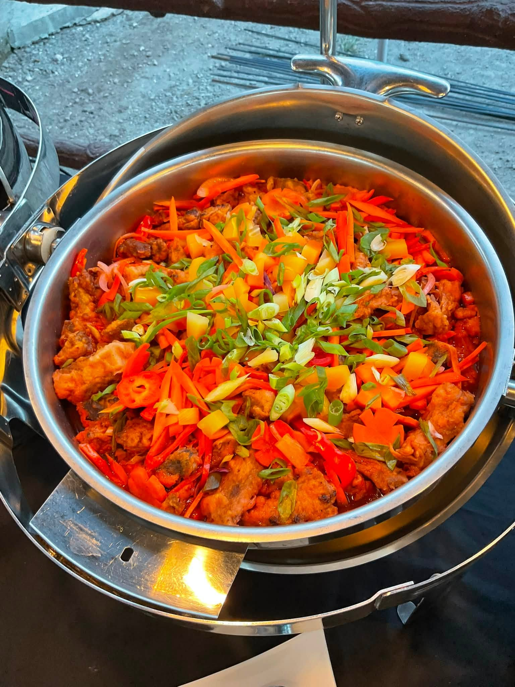

Restaurant & View Deck
Azotea de Salcedo
An open-air restaurant and view deck in Brgy. San Roque, serving fresh seafood, Filipino favorites, and boodle fight platters with scenic coastal views.
Good to know
About Azotea de Salcedo
Azotea de Salcedo is a restaurant and view deck in Barangay San Roque, Mahinog, offering open-air dining with scenic coastal views. It's known for serving freshly prepared seafood, Filipino favorites, grilled specialties, and boodle fight meals ideal for groups.
Its spacious setting makes it a popular venue for family gatherings, celebrations, and visitors looking to enjoy local cuisine while taking in the relaxing seaside atmosphere.
Best For
- Family dining
- Group gatherings
- Boodle fights
- Scenic views

Plan your visit
Visitor Information
- Location: Brgy. San Roque, Mahinog
- Hours: 6:00AM - 10:PM
- Price Range: ₱100 - ₱300
- Specialty: Seafood & Filipino cuisine
- Popular Dishes: Grilled tuna panga, boodle fight, fresh seafood
Ready to see more of Mahinog?
Browse the rest of our destinations and local eateries.
Back to Where to Eat